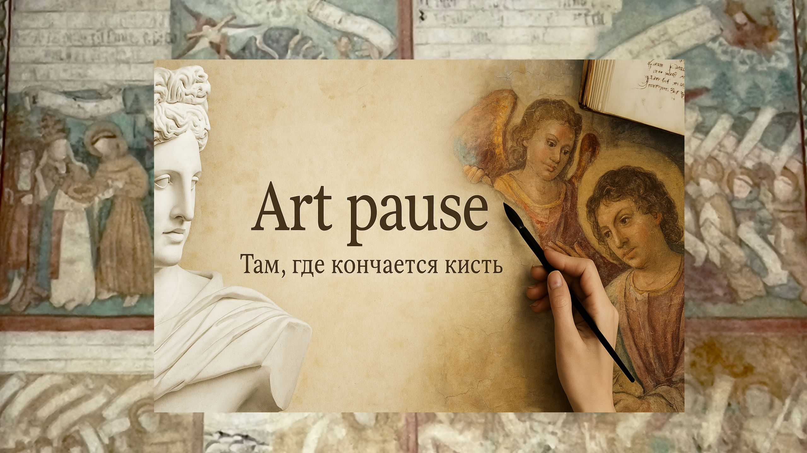

Анна Ярославна и 33 короля. Тайны Реймсского собора
Реймс — город, где короновали французских королей, где сквозь готические витражи светит история.



Реймс — город, где короновали французских королей, где сквозь готические витражи светит история.

Почти сто лет мир пытается разгадать загадку исчезнувшей части Гентского алтаря. Этот шедевр пережил иконоборцев, революции, пожары и нацистскую охоту за искусством.

Что, если платья умеют говорить? А если они молчат — то о чём?
Это видео — не просто экскурсия по выставке Louvre Couture. Это разговор о тайнах, спрятанных в складках шелка, шипах металла и линиях силуэтов.

История крестьянского сына, ставшего «художником вечных льдов»: Арктика, экспедиции, мировое признание и Орден Почётного легиона.

Это история о том, как ювелирный дом превратился в символ эпохи — от королевских дворов до Голливуда. Мы проследим, как эстетика Cartier отражала дух времени, вдохновлялась искусством и сама влияла на развитие мирового ювелирного стиля.

Как научиться узнавать барокко в архитектуре: основные признаки стиля, визуальные особенности и художественная логика эпохи.

История образов таро как культурного языка: от ренессансных аллегорий до модернистских и сюрреалистических интерпретаций.

История Нади Бенуа — художницы и сценографа, чья биография соединяет театр, живопись, эмиграцию и культурную историю XX века.
Здесь мы говорим о том, как литература, искусство и история переплетаются и помогают понять прошлое, настоящее и самих себя.
Вы можете связаться со мной через форму — письмо придёт прямо на почту проекта.
Ответственная за содержание: Ольга Федоровская
Контакт: через форму обратной связи на сайте
Проект Art pause является некоммерческим образовательным ресурсом, посвящённым истории искусства и литературы.